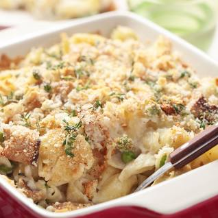

Return to Recipes
Tuna Noodles

The tuna noodle casserole is a delicious, classic dish with a creamy taste that brings back memories of my childhood.
The sauce is rich and creamy, but not too heavy, and the crunchy topping and fresh parsley provide the perfect balance of textures.
Additionally, it's a great option for feeding a crowd on a budget.
Ingredients
- 1 (12 ounce) package egg noodles
- 4 ¼ teaspoons kosher salt, divided
- 4 tablespoons salted butter, divided
- 5 teaspoons olive oil, divided
- 1 (8 ounce) package sliced fresh mushrooms
- 1 small white onion, minced
- ¼ cup all-purpose flour
- 2 cups milk
- 1 ½ cups chicken stock
- 2 tablespoons lemon juice
- 1 teaspoon Dijon mustard
- ½ teaspoon ground black pepper
- 1 ½ cups shredded white Cheddar cheese
- 1 cup frozen sweet peas
- 2 (6 ounce) cans tuna, drained
- 1 cup panko bread crumbs
- ¼ teaspoon ground paprika
- 2 tablespoons finely chopped fresh parsley
Steps
- Preheat the oven to 375 degrees F (190 degrees C). Grease a 9x13-inch baking dish.
- Bring a large pot of water to a boil. Add egg noodles and 3 teaspoons salt to the boiling water; cook until tender yet firm to the bite, about 6 minutes. Drain noodles. Return to pot and set aside.
- Heat 2 tablespoons butter and 1 tablespoon oil in a large skillet over medium-high heat. Add mushrooms and onion and cook until mushrooms are softened and onions are translucent, about 4 minutes. Add remaining butter; stir constantly until melted. Sprinkle flour over vegetable mixture and cook, stirring constantly, for 1 minute. Stir in milk and stock and bring to a simmer, stirring often. Simmer for 5 minutes. Stir in lemon juice, Dijon mustard, 1 teaspoon salt, and pepper.
- Add sauce mixture to reserved noodles. Stir in 1 cup Cheddar cheese, peas, and tuna. Pour mixture into the prepared baking dish and sprinkle remaining Cheddar cheese over the top.
- Stir together bread crumbs, remaining 2 teaspoons oil, remaining 1/4 teaspoon salt, and paprika in a small bowl. Sprinkle bread crumb mixture evenly over the casserole.
- Bake in the preheated oven until golden and bubbly, 25 to 30 minutes. Sprinkle with parsley and serve.
Return to Recipes